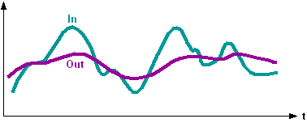

[FILTER] Attenuation filter
FILTER attenuates the input signal by a first-order low-pass filter.
Functioning
If the input value [In] jumps at time t0 from 0 to 1, the output [Out] (at time t0: [Out] = 0) issues an exponential response as per function1–e-(t-t0)/TiCon, t ≥ t0, where t is the current time and [TiCon] the time constant. The greater [TiCon], the longer the time the output requires to apply the input value. The duration is approximately five times the time constant.

In | Sensor signal | Out | Filtered signal |
Integrated functions
- Adjustable attenuation by means of a time constant.
- Input value applied to the output via reset pulse.
Enabling and disabling the function
- When [EnFnct] = 1, the function is switched on.
- When [EnFnct] = 0, the function is switched off.
No new input values are acquired and calculation is stopped. The last value is available at output [Out].
Reset
When [Reset] = 1, input [In] is issued at output [Out].
Pins
Input | Description | Data type | Default value |
|---|---|---|---|
|
EnFnct | Enable function Enables the function. | Boolean | 1 |
0 - The function is disabled. | |||
|
In | Input | Real | 0.0 |
|
Reset | Reset | Boolean | 0 |
0 - Do not reset | |||
|
TiCon | Time constant [TiCon] should be greater than 10s. In the special case where [TiCon] = 0, the filter output immediately follows the filter input. | Time | 10s |
Output | Description | Data type | Default value |
|---|---|---|---|
|
Out | Output | Real | 0.0 |
Application
The attenuation filter is used to attenuate signals having unwanted, fast changes. Fluctuations or deviations of measured variables can thus be suppressed.
Process response
In the first process cycle, the filtered value is initialized with 0 and provided at the output. Input [Reset] is ignored in the first process cycle. Filtering takes place for the first time from the second process cycle.
If filtering is to start from the present value of [In], [Reset] must be set in the second cycle.